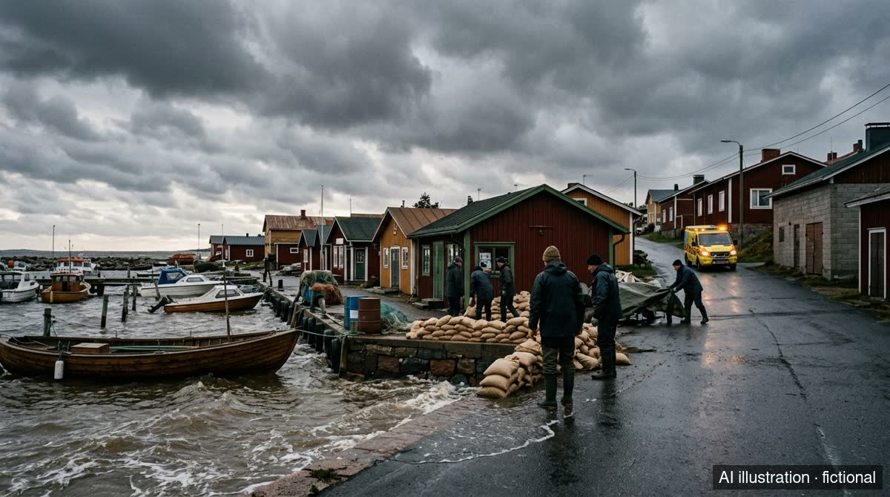

News · Weather
Storm surge warning for the Halvik coast
Low-lying areas may flood this evening, rescue services say.

Halvik Rescue Services has issued an orange storm surge warning for the Halvik coast.
The sea level at Old Harbour may rise to 1.6 metres above normal this evening, and low-lying parts of Old Harbour, Saltmarsh and Lindholm Island may flood, according to the rescue services.
Residents of low-lying areas are advised to move valuables to an upper floor and to follow official updates.
This story will be updated.